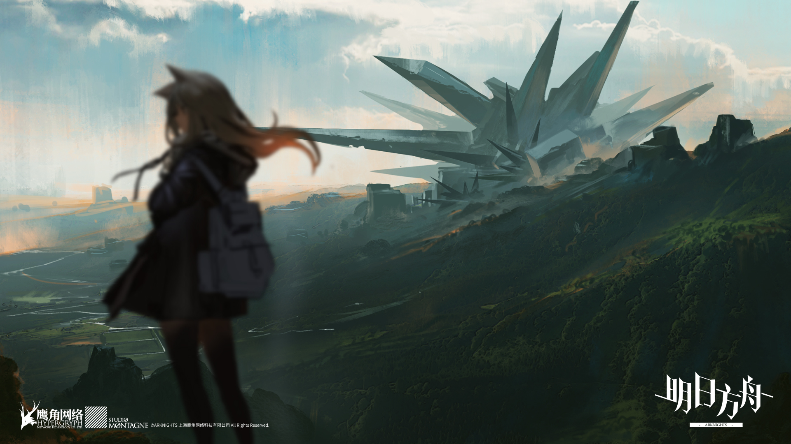
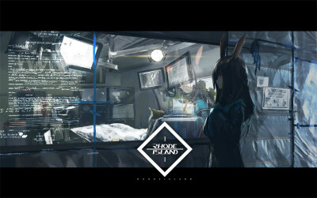
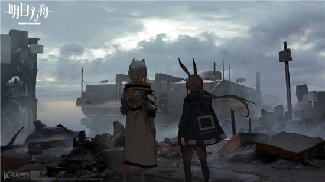

The land was ravaged by an unknown natural disaster, through which a large number of mysterious minerals - "Originiums" appeared on the land. Depending on the progress of technology, the energy contained in Originiums is put into industry, which enables civilization to enter the modern era smoothly. At the same time, yuanyuan stone itself also gives birth to the existence of "infected people". |
||
 |
A person infected with a Originiums.The theoretical mortality rate is 100%, with the ability to spread contagion and potentially dangerous at the time of death, which is the target of isolation and expulsion by countries.For too long, no one has told them what to do with their lives. Now, with the emergence of a subversive, more and more infected people are being drawn into a revolt called the "integration movement". A large amount of contact with the source stone within a short time, or the Originiums is cut by the Originiums and other reasons, so that the source stone enters the body, it is likely to be infected with ore disease and become infected.There is no way to cure the infection. After infection with the Originiums, crystals will appear on the body surface and/or in the body. Somatic cells will gradually fuse with the source stone.A person afflicted with ore disease can use this crystallized and fused detachment wand and other source stone weapons to cast spells directly |
|
Cities built on mobile devices.Frequent and devastating natural disasters have forced almost all countries to take shelter by regularly moving homes and settlements.And it is under this demand that the mobile city is slowly born.In the process of migration, people try to install buildings and devices on mobile devices, and constantly expand the scale of vehicles.Under the evolution of civilization and technology, people eventually created very large mobile cities. The smallest unit of a mobile city-state is a district, and each district has a foundation section with various facilities to keep it running, including extremely complex power supply systems, drainage systems and source rock engines.A city is usually composed of a number of such districts, the most important of which is the core city, where the city's tower is located. |